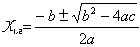
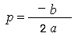

main(){
int a;
printf("input a number\n");
scanf("%d",&a);
printf("%ld",a);
}
由于输入数据类型为整型，而输出语句的格式串中说明为长整型，因此输出结果和输入数据不符。如改动程序如下：
main(){
long a;
printf("input a long integer\n");
scanf("%ld",&a);
printf("%ld",a);
}
运行结果为：
input a long integer 1234567890 1234567890
当输入数据改为长整型后，输入输出数据相等。
main(){
char a,b,c;
printf("input character a,b,c\n");
scanf("%c %c %c",&a,&b,&c);
printf("%d,%d,%d\n%c,%c,%c\n",a,b,c,a-32,b-32,c-32);
}
输入三个小写字母，输出其ASCII码和对应的大写字母。
main(){
int a;
long b;
float f;
double d;
char c;
printf("\nint:%d\nlong:%d\nfloat:%d\ndouble:%d\nchar:%d\n",sizeof(a),sizeof(b),sizeof(f),sizeof(d),sizeof(c));
}
输出各种数据类型的字节长度。
已知三角形的三边长a,b,c，则该三角形的面积公式为：
，
其中s = (a+b+c)/2
源程序如下：
#include<math.h> main() { float a,b,c,s,area; scanf(“%f,%f,%f”,&a,&b,&c); s=1.0/2*(a+b+c); area=sqrt(s*(s-a)*(s-b)*(s-c)); printf(“a=%7.2f,b=%7.2f,c=%7.2f,s=%7.2f\n”,a,b,c,s); printf(“area=%7.2f\n”,area); }
求根公式为：

令，
则x1=p+q
x2=p-q
源程序如下：
#include<math.h> main() { float a,b,c,disc,x1,x2,p,q; scanf(“a=%f,b=%f,c=%f”,&a,&b,&c); disc=b*b-4*a*c; p=-b/(2*a); q=sqrt(disc)/(2*a); x1=p+q;x2=p-q; printf(“\nx1=%5.2f\nx2=%5.2f\n”,x1,x2); }